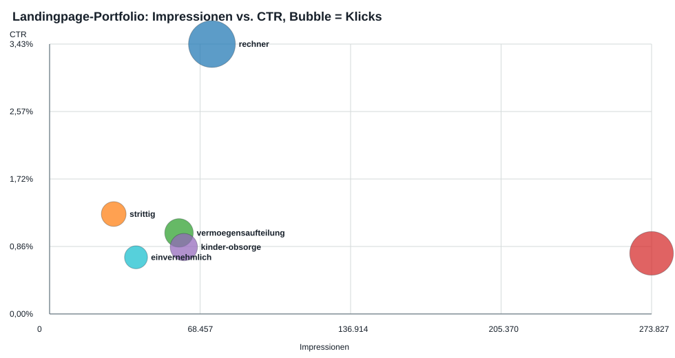
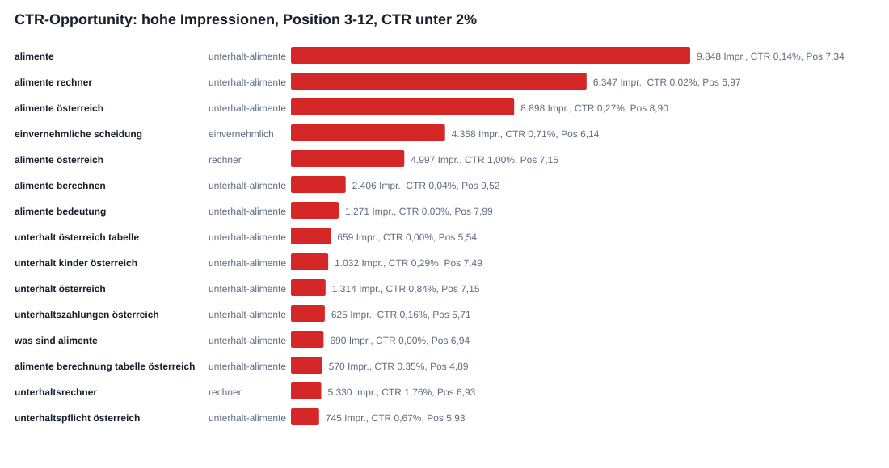
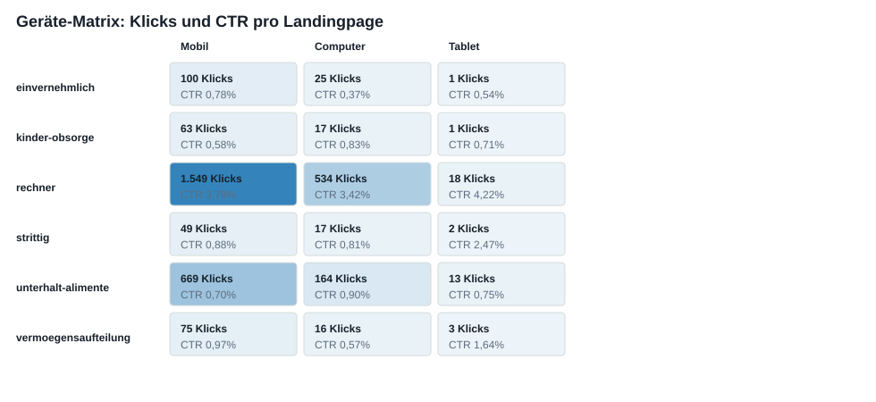

3 Visualisierungen zur Search-Performance
Diese Seite zeigt die drei wichtigsten Blickwinkel auf die Google-Search-Console-Daten: Seitenleistung, Query-Potenziale und Geräteverteilung.
1. Landingpage-Portfolio
Interpretation: unterhalt-alimente hat die groesste Reichweite,
aber eine niedrige CTR. rechner hat weniger Impressionen, liefert aber deutlich
effizienter Klicks.

2. CTR-Opportunities
Interpretation: Die groessten kurzfristigen SEO-Hebel liegen bei Suchanfragen
mit vielen Impressionen, Position 3-12 und niedriger CTR, vor allem rund um
alimente auf unterhalt-alimente.

3. Geraete-Matrix
Interpretation: Die Nutzung ist klar mobil gepraegt. Der Rechner performt auf allen Geraeten sichtbar besser als die reinen Informationsseiten.
